Documentación · versión 1.4.0
Pokédex Retro, de punta a punta
La Pokédex de PokéAPI con estética Game Boy, un chat con Claude u OpenAI y un servidor MCP. Aquí está todo: cada sección de la web, cómo funciona el chat y sus agentes, las 12 herramientas, cómo se guardan los datos, la seguridad, las pruebas y cómo se construyó.
Empezar
Qué es
PokéAPI tiene todos los datos de Pokémon, pero en JSON y repartidos en miles de URLs. Pokédex Retro los presenta como una Pokédex de Game Boy: buscas, paginas y abres fichas sin servidor propio, porque todo corre en el navegador y se publica en GitHub Pages.
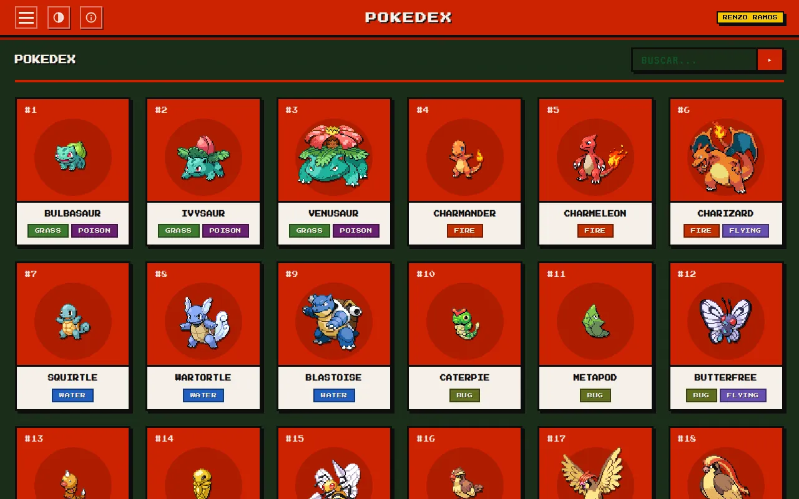
-
Siete secciones
Pokédex, movimientos, tipos, habilidades, naturalezas, objetos y bayas, con buscador y paginación en la URL.
-
Chat con IA
Pregunta en lenguaje natural con tu propia clave de Claude u OpenAI, sin backend y sin cuentas.
-
Servidor MCP
Claude Code o Claude Desktop consultan la Pokédex con las mismas 12 herramientas del chat.
-
Web bien hecha
CSP estricta, WCAG 2.1 AA, caché en el navegador, cero dependencias en producción y Lighthouse en CI.
Es un proyecto personal de portafolio de Renzo Ramos, construido por fases con OpenSpec, con TDD y pruebas de mutación. Está escrito en JavaScript con módulos ES, sin frameworks ni build.
Empezar
Ejecutar en local
Necesitas Node 22 o superior (con nvm, nvm use).
git clone https://github.com/RenzoRamosDEV/Pokedex-Retro.git
cd Pokedex-Retro
npm ci # dependencias y hook de pre-commit
node scripts/serve-site.mjs # http://127.0.0.1:4173/
Abrir los HTML con doble clic (file://) no funciona, porque los módulos ES
necesitan HTTP. Para otro puerto: PORT=4181 node scripts/serve-site.mjs.
| Comando | Qué hace |
|---|---|
npm test | Tests unitarios de la web y los scripts |
npm run e2e | Pruebas de extremo a extremo con Playwright (antes: npx playwright install chromium) |
npm run test:mutation | Mutación del núcleo; también :chat y :ui |
npm run lint / format:check / typecheck | ESLint, Prettier y comprobación de tipos con JSDoc |
npm run check:html | Comprueba que la cabecera es igual en todas las páginas |
npm run lhci | Lighthouse contra la PokéAPI real (necesita red) |
npm run mcp:start / mcp:test / mcp:inspect | Arranca, prueba o inspecciona el servidor MCP |
La web
Lo común a todas las páginas
Ocho páginas HTML (Pokédex, movimientos, tipos, habilidades, naturalezas, objetos, bayas y chat) y una página 404, todas con la misma cabecera escrita a mano:
- Menú con las ocho páginas; la actual lleva
aria-current="page". - Selector de tema: NORMAL, DMG o MONO.
- Panel INFO: nombre, autor, versión, stack, origen de los datos y número de secciones.
Búsqueda y paginación
- La búsqueda y la página van en la URL:
?q=char&page=2, así que se pueden compartir y recargar. - El texto se pasa a minúsculas, los espacios se cambian por guiones y se busca «el nombre contiene el texto», sobre los nombres en inglés de PokéAPI.
- Hay buscador en Pokédex, movimientos, objetos, bayas y habilidades; Tipos y Naturalezas muestran todo de una vez.
- Paginación «◀ ANT. · N / total · SIG. ▶», que no se pinta si solo hay una página. Una página no válida en la URL cuenta como la 1.
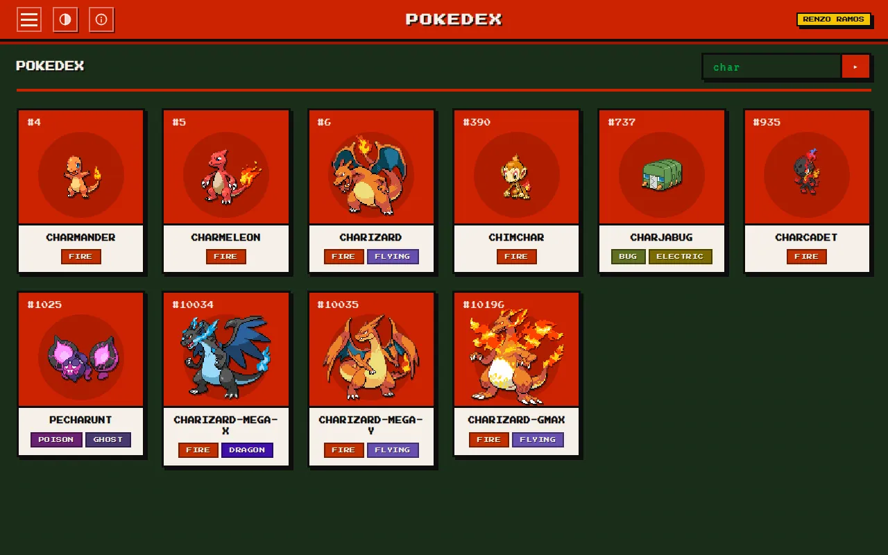
| Sección | Recurso de PokéAPI | Por página |
|---|---|---|
| Pokédex | pokemon | 18 |
| Movimientos | move | 16 |
| Bayas | berry | 15 |
| Objetos | item | 12 |
| Habilidades | ability | 8 |
| Tipos | type | Sin paginar |
| Naturalezas | nature | Sin paginar |
Estados
Una única región de estado anuncia lo que pasa a los lectores de pantalla:
- «CARGANDO...» mientras llegan los datos.
- «SIN RESULTADOS» si la búsqueda no encuentra nada.
- «No se pudieron cargar los datos. Inténtalo de nuevo más tarde.» si falla la lista.
- «N ELEMENTOS NO SE PUDIERON CARGAR» si fallan algunos detalles: el resto se muestra igual.
- Sin JavaScript: «ESTA POKÉDEX NECESITA JAVASCRIPT».
Al salir de la página se cancelan las peticiones en curso, y si vuelves con el botón «atrás» del navegador la carga se repite.
Idioma
La interfaz está en español. Los datos de PokéAPI se muestran tal cual llegan, en inglés y en mayúsculas, sin traducir; algunas etiquetas de la ficha, como HEIGHT o BASE STATS, también están en inglés.
La web
Pokédex y ficha
Una rejilla de tarjetas, 18 por página, con el número, el sprite (o «?» si no tiene), el nombre y los tipos de cada Pokémon. Al pulsar una se abre su ficha.
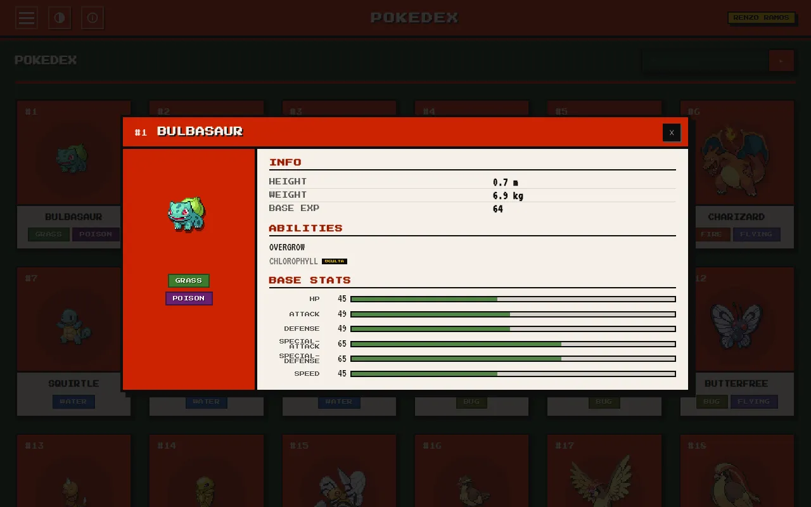
La ficha
- Es un
<dialog>nativo con el número, el nombre, el sprite y los tipos. - INFO: altura en metros, peso en kilos y experiencia base.
- ABILITIES: sus habilidades; las ocultas llevan la etiqueta «OCULTA».
- BASE STATS: cada estadística con su valor y una barra del color de su tipo principal.
Abrir, cerrar y compartir
- Se cierra con el botón «✕», con Esc o pulsando fuera; el foco vuelve a la tarjeta.
- Al abrirla, la URL cambia a
#pokemon-<id>sin llenar el historial, así que puedes compartirla. - Un enlace como
index.html?page=2#pokemon-25abre la ficha al cargar, si ese Pokémon está en esa página.
La web
Las demás secciones
Movimientos
Tarjetas con número, tipo, clase de daño (físico, especial o de estado), nombre, potencia (POW), precisión (ACC), PP y prioridad (PRI), con su efecto debajo. Los valores que no existen aparecen como «—».
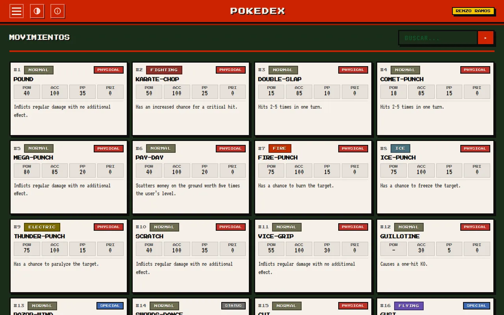
Tipos
Una tabla de efectividad de 18 tipos, atacante contra defensor, con ×2, ½, ✕ (inmune) o
vacío (normal), y su leyenda. Los tipos especiales stellar,
unknown y shadow quedan fuera. La tabla se puede recorrer con el
teclado.
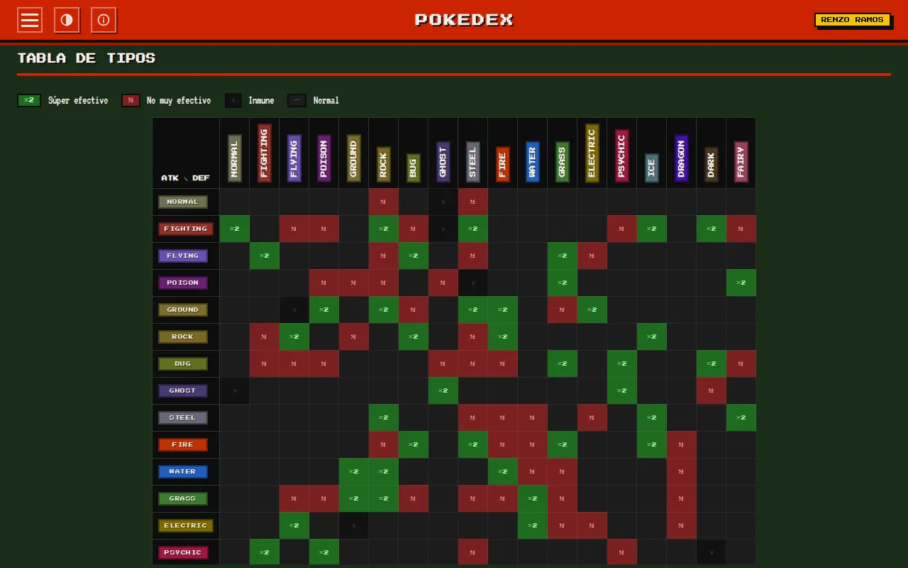
Habilidades
Tarjetas con número, nombre, cuántos Pokémon la tienen y su efecto.
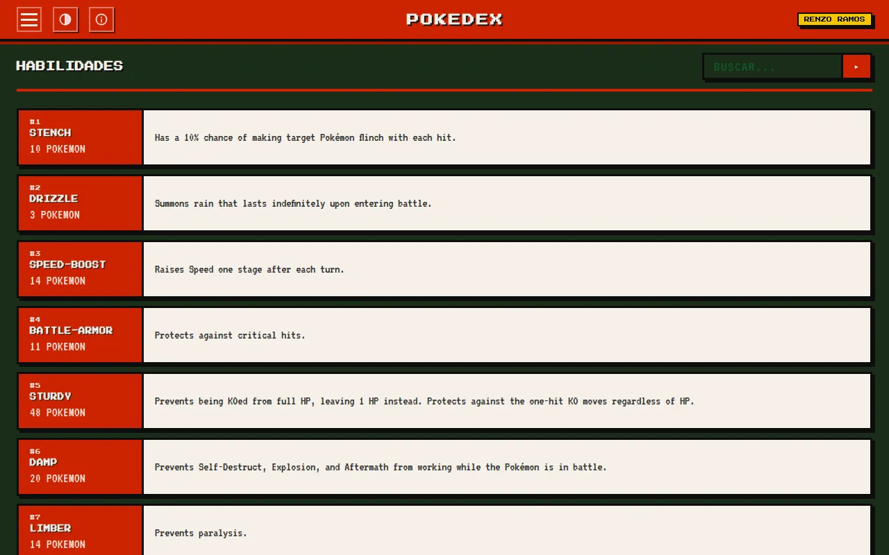
Naturalezas
Un acordeón con un grupo por estadística (ATK, DEF, SP.ATK, SP.DEF y SPD). Cada uno muestra qué naturalezas la suben y cuál bajan, y cuáles la bajan y cuál suben. Un grupo NEUTRAL reúne las que no cambian estadísticas.
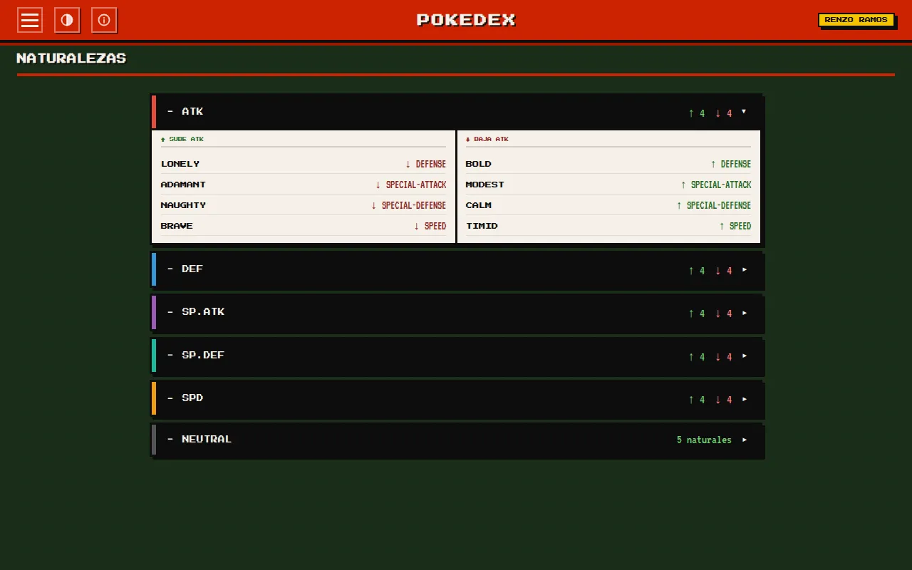
Objetos
Una tabla con sprite, objeto, categoría, precio en ₽ y efecto. El precio sale de los precios de compra de PokéAPI, porque el campo antiguo de coste ya no se rellena.
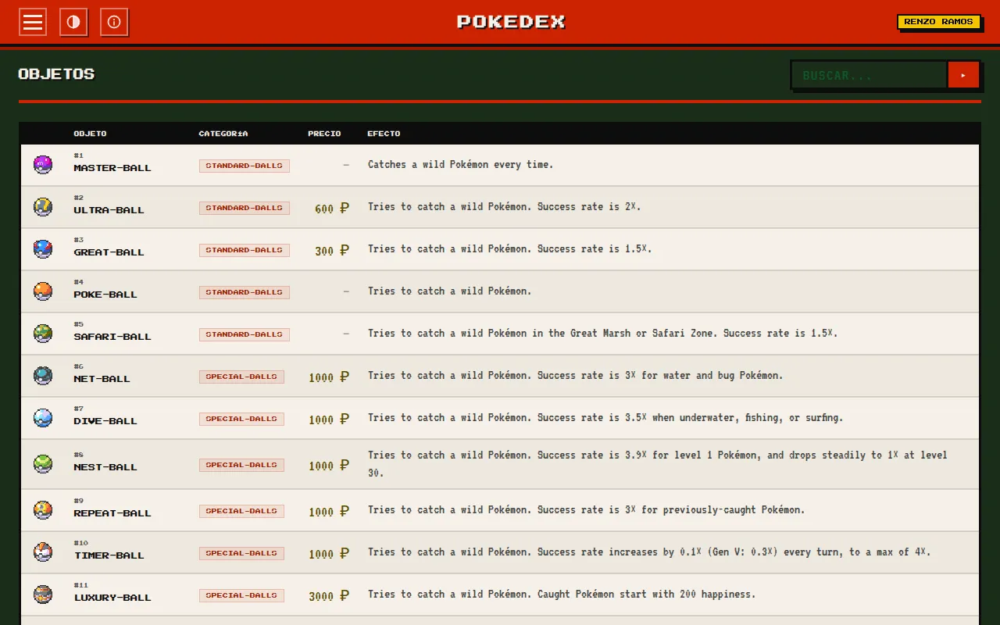
Bayas
Tarjetas con el tipo de su Poder Natural, tiempo de crecimiento, cosecha, poder natural, suavidad, firmeza y sus sabores con su potencia.
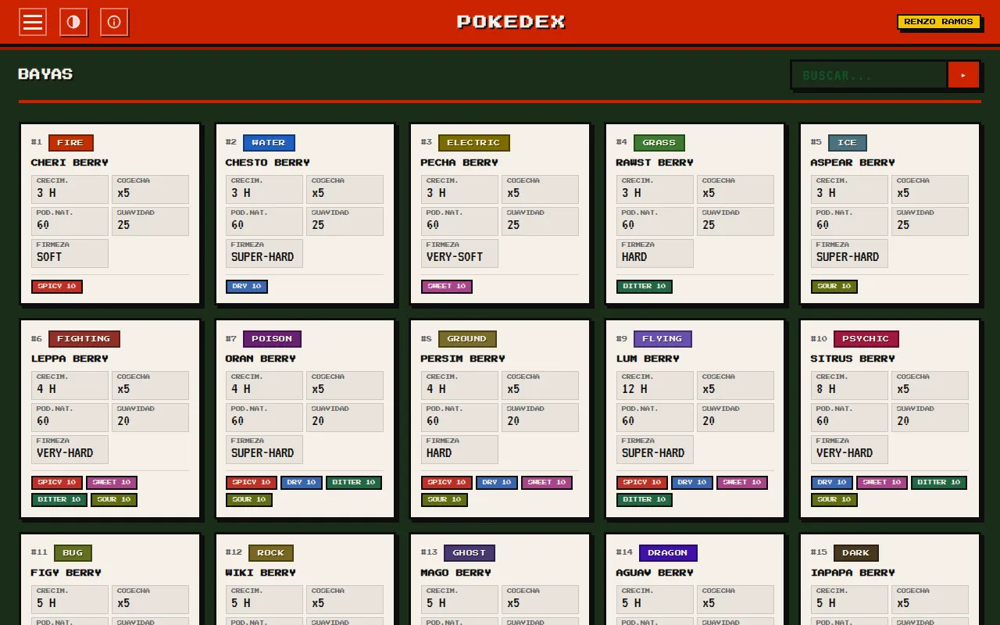
Página 404
«ERROR 404 · PÁGINA NO ENCONTRADA» con un botón para volver al inicio. No carga JavaScript ni se indexa.
La web
Temas
| Tema | Cómo es |
|---|---|
| NORMAL | Rojo Pokédex sobre la pantalla verde oscura |
| DMG | La paleta verde LCD de la Game Boy original (#9bbc0f, #8bac0f, #306230, #0f380f) con sprites pixelados |
| MONO | Grises con una retícula de 8 px |
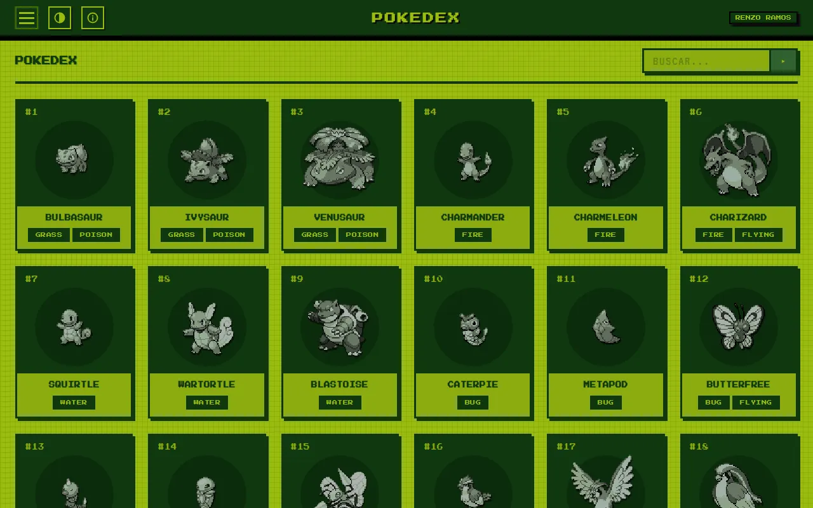
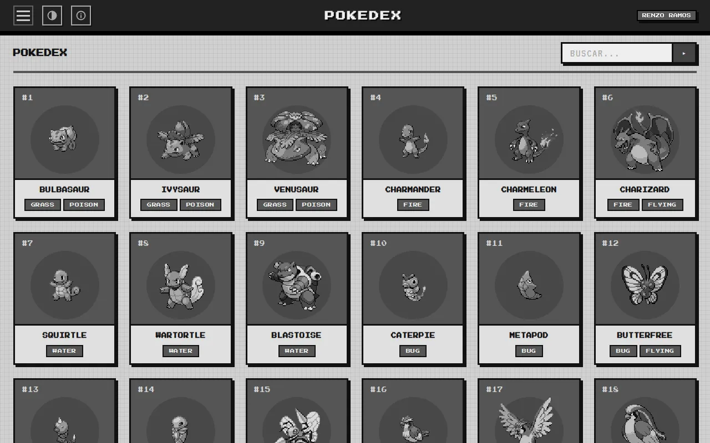
- Sin elección guardada, el tema sigue al sistema: MONO si es oscuro y NORMAL si es claro.
- Al elegir uno se recuerda en el navegador; si el navegador no deja guardar, se aplica igual.
- Los títulos usan Press Start 2P y el texto VT323, servidas desde la propia web.
- Con «movimiento reducido» activado no hay transiciones ni animaciones.
- Los tres temas cumplen el contraste WCAG AA.
El chat
Cómo se usa
En chat.html le preguntas a la Pokédex en lenguaje natural, por ejemplo «¿qué
tipos le hacen ×4 a Gyarados?», y la IA responde con datos reales de PokéAPI, no de memoria.
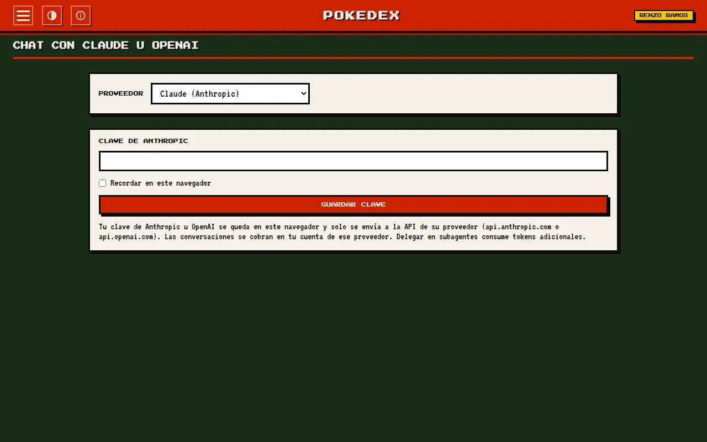
-
Elige el proveedor
Claude (Anthropic), por defecto, u OpenAI. Cambiarlo empieza una conversación nueva.
-
Guarda tu clave
Se queda en tu navegador; marca «Recordar en este navegador» si quieres que dure más allá de la pestaña.
-
Pregunta
Elige el modelo y escribe. Enter envía y Shift Enter hace un salto de línea. «DETENER» corta la respuesta.
- Mientras responde, una línea de estado dice qué está haciendo: «CONSULTANDO: herramienta», «SUBAGENTE: nombre» o «SKILL: nombre».
- Al terminar muestra los tokens usados: «Tokens: entrada · salida».
- Las respuestas son texto plano: no se interpreta Markdown ni HTML.
- «NUEVA CONVERSACIÓN» empieza de cero y «OLVIDAR CLAVE» borra la clave del proveedor elegido.
- Solo responde sobre Pokémon. Ante otro tema contesta «Solo puedo responder preguntas sobre Pokémon.».
El chat
Tu clave y tu privacidad
El chat usa tu propia clave (bring your own key): no hay backend, ni cuentas, ni una clave del autor escondida en la web.
- Se guarda una clave por proveedor, en
sessionStoragepor defecto o enlocalStoragesi marcas «Recordar». - La de Anthropic solo viaja a
api.anthropic.com, y la de OpenAI solo aapi.openai.com. - Nunca se escribe en la página, en la consola ni en la URL.
- Las conversaciones no se guardan: viven solo en la pestaña. Con OpenAI se piden además sin almacenamiento en su servidor.
- Se comprueba el formato: la de Anthropic empieza por
sk-ant-y la de OpenAI porsk-. Si pegas una del otro proveedor, te lo dice. - Las conversaciones se cobran en tu cuenta del proveedor; delegar en subagentes consume tokens extra.
Sobre la seguridad de la clave
Al vivir en el navegador, una extensión maliciosa podría leerla. Para reducir el riesgo, la web tiene una CSP cerrada, solo inserta texto (nunca HTML) y por defecto la clave dura lo que la pestaña.
El chat
Proveedores y modelos
| Proveedor | Modelo | USD por millón (entrada / salida) |
|---|---|---|
| Claude | Opus 5.5 (por defecto) | 4 / 20 |
| Claude | Sonnet 5.5 | 2 / 10 |
| Claude | Haiku 5.5 | 0,10 / 0,50 |
| OpenAI | GPT-6.1 Sol (por defecto) | 2 / 10 |
| OpenAI | GPT-6 Astra | 10 / 50 |
| OpenAI | GPT-6 Luna | 0,10 / 0,50 |
- Claude usa la Messages API en streaming, con caché de prompt y un máximo de 8000 tokens de salida.
- OpenAI usa la Responses API en streaming, con funciones estrictas, sin almacenamiento y un máximo de 8000 tokens de salida.
- Cambiar de modelo empieza una conversación nueva.
- Si la respuesta se corta por longitud, se añade «(respuesta cortada por longitud)».
El bucle
- El modelo pide herramientas, la web las ejecuta en el navegador contra PokéAPI (en paralelo) y le devuelve los resultados, hasta que responde con texto.
- Como mucho 8 rondas por pregunta («He alcanzado el límite de consultas para esta pregunta.»).
- Reintenta hasta 2 veces si el proveedor está saturado o limita el ritmo, pero no si te has quedado sin saldo.
- Las dos APIs se adaptan a un mismo formato interno, así que el resto del chat no depende del proveedor.
El chat
Las 12 herramientas
Son las mismas en el chat y en el servidor MCP. Las de búsqueda reciben
consulta (1–50 caracteres), pagina (por defecto 1) y
tamano_pagina (1–50, por defecto 10). Las de detalle reciben
nombre_o_id.
| Herramienta | Qué hace |
|---|---|
buscar_pokemon | Busca Pokémon por nombre, paginado |
obtener_pokemon | Ficha completa: tipos, estadísticas, habilidades, altura, peso |
buscar_movimientos | Busca movimientos |
obtener_movimiento | Detalle de un movimiento |
buscar_habilidades | Busca habilidades |
obtener_habilidad | Detalle de una habilidad |
buscar_objetos | Busca objetos |
obtener_objeto | Detalle de un objeto, con su precio |
buscar_bayas | Busca bayas |
obtener_baya | Detalle de una baya |
efectividad_tipos | Multiplicador de un tipo atacante contra 1 o 2 defensores, o contra los 18 tipos |
naturalezas | Las naturalezas, opcionalmente solo las que suben o bajan una estadística |
Cada resultado lleva un resumen de una línea más los datos. Por ejemplo,
efectividad_tipos con electric contra water/flying
devuelve «electric contra water/flying: ×4.».
Los errores vuelven al modelo como texto útil, sin cortar la conversación:
- «No existe el Pokémon "x". Usa buscar_pokemon para encontrar el nombre exacto.»
- «El tipo "x" no existe. Tipos válidos: …»
- «La página N no existe; hay M páginas.»
- «PokéAPI no responde; inténtalo en unos minutos.»
El chat
Agente, subagentes y skills
El chat se organiza como un pequeño equipo, definido en el propio repositorio. Las instrucciones son las mismas con Claude y con OpenAI.
El profesor
Es el agente principal. Tiene las 12 herramientas y dos más:
delegar_subagente, para encargar una tarea a un especialista, y
usar_skill, para cargar las instrucciones de una skill. Responde en español,
en texto plano, y siempre consultando las herramientas.
Los tres subagentes
- estratega-tipos
- Debilidades, resistencias y cobertura de movimientos de un Pokémon o de un tipo.
- entrenador-equipos
- Equipos de Pokémon con sus habilidades y naturalezas para un objetivo concreto.
- investigador-pokedex
- Búsquedas y fichas de Pokémon, movimientos, habilidades, objetos y bayas.
- Cada uno tiene solo las herramientas de su especialidad y hasta 6 rondas.
- Recibe únicamente la tarea, y su respuesta vuelve al profesor, no al chat. Sus tokens se suman a los de la pregunta.
- No pueden delegar ni cargar skills: la delegación tiene un único nivel.
Las cuatro skills
- comparar-pokemon
- Compara dos Pokémon por tipos, estadísticas base y habilidades.
- equipo-contra-tipo
- Propone un equipo de 6 Pokémon para enfrentarse a rivales de un tipo.
- analizar-debilidades
- Debilidades y resistencias de un Pokémon, agrupadas en ×4, ×2, ×½, ×¼ y ×0.
- recomendar-naturaleza
- Recomienda una naturaleza según las estadísticas base de un Pokémon.
Las skills se cargan bajo demanda: el profesor solo conoce su nombre y su descripción hasta que decide usar una.
El chat
Errores del chat
| Mensaje | Qué significa |
|---|---|
| Clave no válida | La clave está mal o caducada; revísala en la consola de tu proveedor. |
| Tu cuenta de OpenAI no tiene saldo | Sin crédito; no se reintenta. |
| OpenAI rechazó la petición | Revisa el saldo y los límites en platform.openai.com. |
| Límite de uso alcanzado | Demasiadas peticiones seguidas; espera un momento. |
| Claude / OpenAI está saturado | El proveedor está sobrecargado; prueba en unos minutos. |
| La conversación es demasiado larga | Empieza una nueva. |
| Sin conexión | No se pudo llegar al proveedor. |
Cuando OpenAI devuelve un error, el navegador no puede leerlo por CORS. Para saber qué pasó, el chat hace una comprobación con tu clave contra la lista de modelos: así distingue una clave no válida de una petición rechazada o de un fallo de conexión.
Servidor MCP
Servidor MCP
Un servidor del Model Context Protocol para que Claude Code o Claude Desktop consulten la Pokédex en mitad de una conversación. Reutiliza la misma lógica que la web y se ejecuta desde el repositorio clonado.
npm ci --prefix mcp
# Claude Code
claude mcp add pokedex-retro -- node /ruta/a/Pokedex-Retro/mcp/bin/pokedex-mcp.js
# Claude Desktop (claude_desktop_config.json)
{ "mcpServers": { "pokedex-retro": {
"command": "node",
"args": ["/ruta/absoluta/Pokedex-Retro/mcp/bin/pokedex-mcp.js"] } } }- Transporte: stdio. Por la salida estándar solo va JSON-RPC; los registros van a stderr.
- 12 herramientas: las mismas del chat, con esquemas de entrada y de salida.
- 2 recursos:
pokedex://tipos/tabla(la tabla de efectividad de los 18 tipos) ypokedex://secciones(las secciones de la web con su tamaño de página). - 2 prompts:
comparar_pokemon(dos Pokémon,ayb) yequipo_contra_tipo(un equipo de 6 contra untipo). - Pide a PokéAPI como mucho 4 cosas a la vez, con 10 s de plazo y 2 reintentos, y una caché en memoria de 24 h.
- Se cierra limpio al cerrar el cliente o con Ctrl C, en menos de 2 s.
| Variable | Para qué |
|---|---|
POKEDEX_MCP_LOG | error (por defecto), info (arranque, parada y cada llamada) o debug (también cada URL y acierto de caché) |
POKEDEX_MCP_DISK_CACHE=1 | Caché en disco de 24 h en ~/.cache/pokedex-mcp/ |
npm run mcp:inspect lo abre en el inspector oficial de MCP. El chat de la web no
usa este servidor (un navegador no puede lanzar procesos), pero comparte con él todo el código
de las herramientas.
Por dentro
Arquitectura
Tres entradas (la web, el chat y el servidor MCP) que comparten la misma lógica. JavaScript
con módulos ES y tipos en JSDoc comprobados con tsc, sin build.
site/js/core- Lógica pura: URL, búsqueda, paginación, carga de secciones, límite de peticiones, tabla de tipos y las herramientas.
site/js/api- Cliente HTTP con plazo, reintentos y cancelación, y la caché.
site/js/mappers- Convierten la respuesta de PokéAPI en datos para la vista, probados con respuestas reales.
site/js/ui- Arranque, pintado de cada sección, ficha, desplegables, temas y textos.
site/js/chat- Bucle, streaming, clave, modelos, errores, los dos proveedores y los agentes.
mcp/- El servidor MCP: adaptadores finos sobre
site/js/core.
core y los mappers no tocan el DOM ni la red: reciben lo que necesitan
inyectado. Un test comprueba que se pueden importar sin navegador.
De la URL a la pantalla
- Se leen
qypagede la URL. - Se pide la página de la lista, o la lista completa (de la caché) para filtrar.
- Se piden los detalles, como mucho 6 a la vez; si alguno falla, el resto sigue.
- El mapper de la sección prepara los datos y se ordenan por número.
- Se pinta la sección y se actualiza el estado.
Por dentro
PokéAPI y caché
- Todos los datos salen de
https://pokeapi.co/api/v2; los sprites, deraw.githubusercontent.com. - Sin búsqueda se pide solo la página; con búsqueda, la lista completa del recurso, que se filtra en el navegador.
- Cada petición tiene 10 s de plazo y hasta 2 reintentos (500 ms, 1 s) ante fallos de red, 429 o 5xx, respetando
Retry-After. - Toda la web, chat incluido, comparte un límite de 6 peticiones simultáneas a PokéAPI.
| Qué | Dónde | Cuánto dura |
|---|---|---|
| Listas completas | localStorage | 24 horas |
| Páginas y detalles | Memoria y sessionStorage | La sesión |
Si el almacenamiento no está disponible, está lleno o tiene datos corruptos, se pide a la red. Se descartaron un Service Worker e IndexedDB por complejidad.
Por dentro
Seguridad y accesibilidad
Content Security Policy
Va en una etiqueta <meta>, porque GitHub Pages no permite cabeceras, y es la misma en todas las páginas:
default-src 'self'; script-src 'self'; style-src 'self'; font-src 'self';
img-src 'self' https://raw.githubusercontent.com;
connect-src https://pokeapi.co https://api.anthropic.com https://api.openai.com;
manifest-src 'self'; base-uri 'self'; form-action 'self'; object-src 'none'- Sin
'unsafe-inline'ni'unsafe-eval': no hay estilos, scripts ni manejadores en línea, y unos tests lo comprueban. - Todo lo que viene de fuera se escapa antes de pintarse; el chat solo inserta texto.
- Las fuentes se sirven desde la propia web, sin Google Fonts.
Accesibilidad (WCAG 2.1 AA)
- Enlace «Saltar al contenido», región de estado y aviso sin JavaScript.
- Menú y desplegables operables con Enter, Espacio y Esc; solo uno abierto a la vez.
- La ficha gestiona el foco al abrirse y al cerrarse.
- Las tablas de tipos y objetos se alcanzan con el teclado.
- Respeta el movimiento reducido y el tema del sistema, con contraste AA en los tres temas.
- axe revisa cada página en cada tema, también con la ficha abierta y en el chat, sin fallos graves ni críticos.
SEO y rendimiento
- Descripción, Open Graph,
robots.txt,sitemap.xmlcon las 8 páginas y un manifest para instalarla. - Imágenes con tamaño fijo, carga diferida y decodificación asíncrona.
- Cero dependencias en producción y sin build.
Por dentro
Pruebas y calidad
- Tests unitarios con
node --test, sin red y con respuestas reales guardadas: unos 775 en la web y unos 100 en el servidor MCP. - Playwright con PokéAPI, Claude y OpenAI simulados. Cada prueba falla si hay peticiones externas o violaciones de la CSP.
- Pruebas de la web: cada página, búsqueda, paginación, temas, la ficha con teclado y enlace directo, desplegables, la tabla de tipos y axe en cada página y tema.
- Pruebas del chat: clave, streaming, herramientas, errores, DETENER, OLVIDAR, los dos proveedores, delegación en subagentes, skills y preguntas fuera de tema.
- Mutación con Stryker en nueve configuraciones: un 95 % mínimo para el núcleo y el chat, y un 85 % para la interfaz y el MCP. Las últimas puntuaciones registradas superan el 99 %.
- ESLint, Prettier y
tsccon JSDoc, y un hook de pre-commit que formatea lo que cambias. - Lighthouse en cada pull request: accesibilidad, buenas prácticas y SEO deben llegar a 95. Rendimiento solo avisa, por la latencia de PokéAPI.
Por dentro
CI y publicación
- CI
- En cada pull request y en cada push a
main, con Node 22 y 24: lint, formato, tipos, cabeceras, tests de la web y del MCP. En Node 24 también las pruebas de mutación y Playwright, y en los pull requests, Lighthouse. - Publicación
- Cuando CI termina bien en
main, se publica la carpetasite/tal cual en GitHub Pages, sin build. - Dependabot
- Revisa cada semana las dependencias de la web, del MCP y de los workflows.
Cada versión se anota en el CHANGELOG y se sincroniza en package.json, el MCP, su
server.json y el panel INFO; un test falla si alguna no coincide.
Por dentro
Versiones
| Versión | Fecha | Qué trajo |
|---|---|---|
| 1.0.0-RC.0 | 23/10/2026 | La Pokédex estática: 7 secciones, buscador, paginación, ficha, 3 temas y despliegue en Pages. |
| 1.1.0 | 24/10/2026 | Las seis fases: CI, cliente HTTP robusto, caché, 404, SEO, ficha en diálogo, accesibilidad, Lighthouse, servidor MCP y CSP. |
| 1.1.1 | 24/10/2026 | Fuera el tipo stellar, precios de objetos arreglados. |
| 1.2.0 | 24/10/2026 | El chat con Claude, en streaming, con las 12 herramientas en el navegador. |
| 1.3.0 | 24/10/2026 | OpenAI como segundo proveedor, con una clave por proveedor. |
| 1.4.0 | 25/10/2026 | El profesor, tres subagentes y cuatro skills; solo responde sobre Pokémon. |
El proyecto se construyó en seis fases con OpenSpec: herramientas de calidad, arquitectura web, rendimiento y seguridad, accesibilidad, servidor MCP y documentación. Después llegaron el chat y sus agentes. Hoy hay 14 capacidades especificadas.
Por dentro
Decisiones de arquitectura
0001 · Cabecera estática
Escrita a mano en cada página y comprobada en CI, en vez de inyectarla con JavaScript.
0002 · Caché
localStorage para listas y sessionStorage para detalles, sin Service Worker ni IndexedDB.
0003 · MCP por stdio
Para Claude Code y Desktop en local; sin HTTP ni SSE.
0004 · JSDoc
Tipos con
@ts-checken lugar de TypeScript, para no tener build.0005 · Chat BYOK
La clave del visitante con
fetchdirecto: sin SDK, sin backend y sin clave embebida.0006 · Multiproveedor
OpenAI detrás de un puerto común de proveedor.
0007 · Agentes
Profesor, subagentes y skills, solo sobre Pokémon y sin clasificador en el cliente.
Por dentro
Limitaciones conocidas
- Chat: «solo Pokémon» se basa en instrucciones, así que es de mejor esfuerzo. Delegar en subagentes añade latencia y tokens.
- OpenAI: el razonamiento puede agotar los 8000 tokens antes del texto, y la respuesta sale cortada. A veces no se puede distinguir la falta de saldo de otros errores.
- Datos: pueden ir hasta 24 h por detrás de PokéAPI por la caché, y están en inglés.
- Web: no funciona con
file://. La 404 solo se ve bien bajo/Pokedex-Retro/. La CSP en<meta>no puede impedir que la web se incruste en un iframe. - MCP: se ejecuta desde el repositorio clonado (no está publicado en npm) y solo funciona en local.
Por dentro
Licencia
Pokédex Retro es código abierto con licencia MIT, de Renzo Ramos (RenzoRamosDEV). Las fuentes Press Start 2P y VT323 tienen licencia SIL OFL 1.1. Los datos son de PokéAPI.
↑ Volver arriba